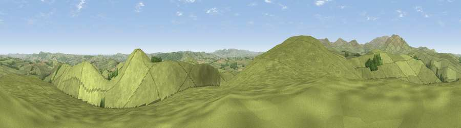

Viewpoint near Ingram
#4977 in England · top 21% of its area beats it · near IngramThe view, rendered

A 360° render of this exact spot computed from the terrain model, tree cover and land cover — summer colours, afternoon light, calibrated against photographs of famous viewpoints. Real trees, hedges and buildings will differ in detail.
The panorama
Grey silhouette: terrain skyline in each direction (720 bearings, Earth curvature and refraction included). Dashed green: skyline with trees (+15 m) and buildings (+8 m) as obstacles. Blue strip: how far the ground is visible on each bearing.
Where the view opens
Wedge length = distance to the farthest visible ground on that bearing (vegetation-aware). Rings at 10, 25 and 50 km.
What fills the view
93% grassland · 4% woodland · 2% cropland
Angular shares of the visible panorama (visual magnitude), not map area. Landscape diversity 0.13 (0–1 Shannon).
Key numbers
More beautiful places nearby
The staircase of upgrades: each row has a higher view potential than everything closer. Driving times are estimates from straight-line distance, calibrated against real road routing — check an actual route before setting out.
| Place | Direction | Drive | Score |
|---|---|---|---|
| Cochrane Pike | SW · 1 km | ~2 min | 75.8 |
| Viewpoint near Ingram | ESE · 1 km | ~3 min | 78.2 |
| Viewpoint near Ingram | NW · 5 km | ~11 min | 80.5 |
| Viewpoint near Ingram | NW · 6 km | ~12 min | 82.0 |
| Viewpoint near Glanton | ENE · 8 km | ~15 min | 82.9 |
| Viewpoint c12273_7856 | W · 9 km | ~17 min | 83.7 |
| Viewpoint c12396_7887 | NW · 9 km | ~17 min | 85.7 |
| Viewpoint near Chillingham | NNE · 13 km | ~24 min | 88.1 |
55.42384, -1.98062 · source: screening · position refined by local search. Computed location — check access rights before visiting.